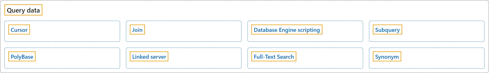

3. Query Data
Classification

Glossary
| Term | Definition | 中文翻译 | Source |
|---|---|---|---|
| Cursor 游标 |
"These applications need a mechanism to work with one row or a small block of rows at a time. Cursors are an extension to result sets that provide that mechanism." | 这些应用程序需要一种一次处理一行或一小块行的机制。游标是结果集的扩展，提供了这种机制。 | Microsoft, 2023, para. 1 |
| Join 联接 |
"SQL Server uses joins to retrieve data from multiple tables based on logical relationships between them." | SQL Server 使用联接，基于多个表之间的逻辑关系从这些表中检索数据。 | Microsoft, 2025b, para. 1 |
| Database Engine scripting 数据库引擎脚本 |
"The SQL Server Database Engine supports the Microsoft PowerShell scripting environment to manage instances of the Database Engine and the objects in the instances." | SQL Server 数据库引擎支持 Microsoft PowerShell 脚本环境，用来管理数据库引擎的实例以及实例中的对象。 | Microsoft, 2025a, para. 1 |
| Subquery 子查询 |
"A subquery is a query that is nested inside a SELECT, INSERT, UPDATE, or DELETE statement, or inside another subquery." |
子查询是嵌套在 SELECT、INSERT、UPDATE 或 DELETE 语句内部，或嵌套在另一个子查询内部的查询。 |
Microsoft, 2025e, para. 1 |
| PolyBase PolyBase |
"PolyBase enables data virtualization for SQL Server." | PolyBase 为 SQL Server 提供数据虚拟化能力。 | Microsoft, 2025d, para. 1 |
| Linked server 链接服务器 |
"Linked servers enable the SQL Server Database Engine and Azure SQL Managed Instance to read data from remote data sources and execute commands against remote database servers (for example, OLE DB data sources), outside of the instance of SQL Server." | 链接服务器使 SQL Server 数据库引擎和 Azure SQL Managed Instance 能够在 SQL Server 实例之外读取远程数据源中的数据，并对远程数据库服务器执行命令（例如 OLE DB 数据源）。 | Microsoft, 2025c, para. 1 |
| Full-Text Search 全文搜索 |
"Full-Text Search in SQL Server and Azure SQL Database lets users and applications run full-text queries against character-based data in SQL Server tables." | SQL Server 和 Azure SQL Database 中的全文搜索让用户和应用程序能够对 SQL Server 表中基于字符的数据运行全文查询。 | Microsoft, 2026, para. 1 |
| Synonym 同义词 |
"A synonym is a database object that serves the following purposes:" | 同义词是一种数据库对象，用于以下目的： | Microsoft, 2017, para. 1, item 1 (lead-in sentence and list item 1 joined) |
References
- Microsoft. (2017, March 3). Synonyms (Database Engine). Microsoft Learn. https://learn.microsoft.com/en-us/sql/relational-databases/synonyms/synonyms-database-engine
- Microsoft. (2023, December 7). Cursors (SQL Server). Microsoft Learn. https://learn.microsoft.com/en-us/sql/relational-databases/cursors
- Microsoft. (2025a, August 15). Database Engine scripting. Microsoft Learn. https://learn.microsoft.com/en-us/sql/ssms/scripting/database-engine-scripting
- Microsoft. (2025b, August 21). Joins (SQL Server). Microsoft Learn. https://learn.microsoft.com/en-us/sql/relational-databases/performance/joins
- Microsoft. (2025c, December 5). Linked servers (Database Engine). Microsoft Learn. https://learn.microsoft.com/en-us/sql/relational-databases/linked-servers/linked-servers-database-engine
- Microsoft. (2025d, November 18). PolyBase overview. Microsoft Learn. https://learn.microsoft.com/en-us/sql/relational-databases/polybase/overview
- Microsoft. (2025e, August 21). Subqueries (SQL Server). Microsoft Learn. https://learn.microsoft.com/en-us/sql/relational-databases/performance/subqueries
- Microsoft. (2026, July 20). Full-Text Search. Microsoft Learn. https://learn.microsoft.com/en-us/sql/relational-databases/search/full-text-search